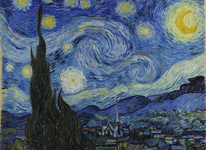

Gogh (1853-1890) foi um pintor holandês do final do século XIX e um dos maiores expoentes do pós-impressionismo.
Foi um homem intenso, que usava a arte como ferramenta de sobrevivência em meio a uma agitada e instável saúde emocional e psicológica.
É considerado um verdadeiro gênio da pintura. Teve uma carreira relativamente curta como pintor, cerca de dez anos. Entretanto, produziu uma enorme quantidade de telas, pois trabalhava incessantemente, nos deixando um legado impressionante e carregado de paixão.
a noite estrelada (1889)
os girassóis(1888)
auto-retrato (1889)